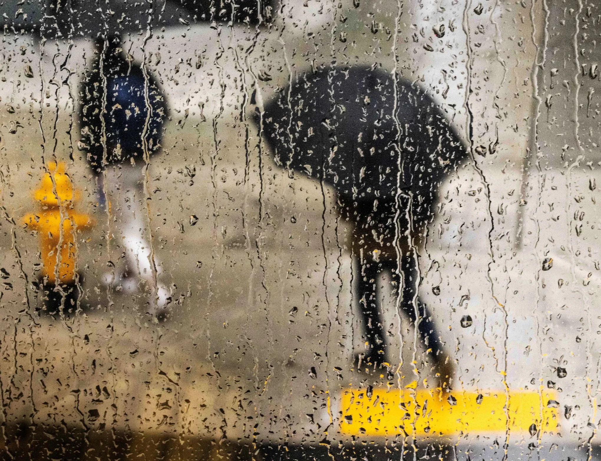
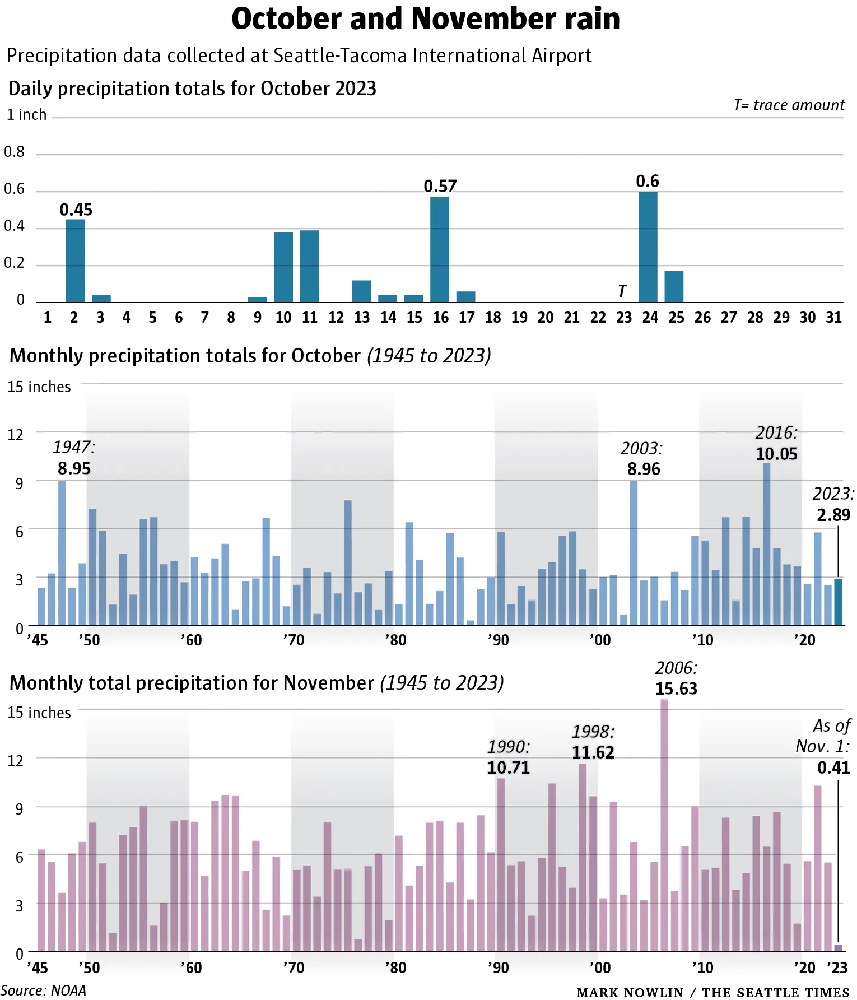

Assignment Source: seattletimes.com
Rain falls over Seattle's South Lake Union neighborhood during a gray day Tuesday. Daniel Kim / The Seattle Times
By Vonnai Phair and Lauren Girgis
Seattle is expected to get more rain in the next week than it did in the entire month of October.
Heavy rain began along falling the coast and through the Olympics Wednesday evening, spreading into the region and wetting pavement along the way overnight.
The heaviest overnight rainfall saturated the ground along the southwest slopes of the Olympics. Quinault received 3.24 inches of rain from midnight through 6 a.m. Thursday, and Seattle picked up 0.55 inches, the National Weather Service said.
Rain will continue through the day Thursday, with up to 4 inches expected in the Cascades and Olympics and 0.75 inches to 1.25 inches in the lowlands.
Winds will accompany the downpour, with the highest gusts (approaching 40 mph) in the lowlands in Skagit and Whatcom counties. Winds up to 20 mph will jostle the remaining lowland areas across Western Washington, the weather service said.
With all the wind and rain and rain and wind, localized flooding and standing water are possible in areas where downed leaves haven't been cleared from drains.
A flood watch for Mason County remains in effect through Thursday night.
Even if the Skokomish River does not flood Thursday, the next system arriving Friday night will produce heavy rains, giving the waters another chance.
Friday (but only during the day) will serve as a brief reprieve from the rain before it returns in earnest by nightfall. Another weather system — an atmospheric river — will move in Friday night and deliver a second round of widespread rain across the region.
Friday's overnight system is expected to bring another 1.6 to 1.8 inches of rain to the Seattle area and 2 to 2.5 inches to the Olympics, the weather service said.
Winds will increase again with gusts up to 35 mph ahead of the next system of rain set to arrive Saturday.
Showers are in the forecast through at least Wednesday, as high temperatures hover around normal, in the mid-50s, the weather service said.
If you've been adding up the rainfall totals, Seattle is expected to wash away October's 2.89 inches of rain that fell at Seattle-Tacoma International Airport in the next few days.
Here are some tips from the Washington State Department of Transportation to drive safely on slick roads:
Material from The Seattle Times archives is included in this report.
Vonnai Phair: 206-464-2757 or vphair@seattletimes.com; on Twitter: @vonnaiphair. Vonnai Phair covers morning breaking news and enterprise for The Seattle Times.
Lauren Girgis:206-652-6591 or lgirgis@seattletimes.com; on Twitter: @laurengirgis.